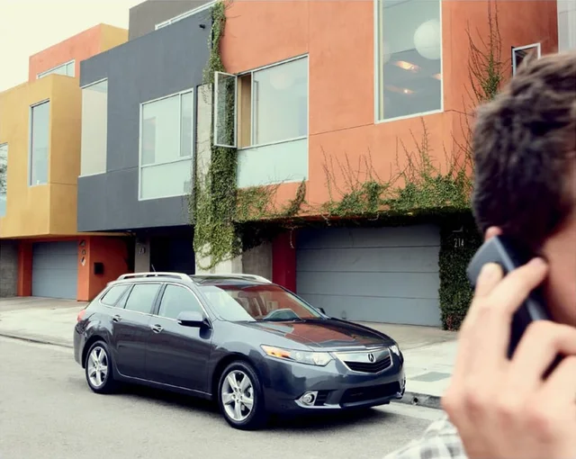

The TSX in its brochure days
Period brochure photography celebrating the sedan and the long-roof wagon.
Acura promotional image, shared by u/vulqcii. Not the car offered here.
In appreciation of our favorite wagon
I’ve loved this wagon since we got it in 2014. It has served our family well. Now we're selling it. We'd love it to go to someone who can appreciate this beautiful and rare long-roof.
Cambridge, MA, US · 132,113 mi · shimon@rura.org
See the photographsPhotos November 7–8, 2026 · Tap to enlarge. Plates masked / no other changes.
This has been our family wagon since 2014. It offers great cargo capacity like an SUV with the driving dynamics of a sedan. We've maintained it pretty well, and it has plenty of life left in it. We're selling it because we've switched to an EV.
Work since 2025 includes tires, alternator, battery, exhaust repairs, new headlight lenses, and an upgraded head unit that supports wireless Android Auto and Apple Carplay.
The car is excellent mechanically. No mechanical issues. No warning lights. Starts great, drives great.
There are some issues appropriate to its age. You'll see some rocker-panel rust, body scuffs, and upholstery wear. The sunroof doesn't move (but is firmly closed with no leaks). There was a professional body repair in 2024 for a minor collision involving the rear passenger side quarter panel.
A couple of favorite memories with the wagon.
| Year | Key service items |
|---|---|
| 2026 | Exhaust repair |
| 2025 | Alternator; AGM battery; rear brake pads and rotors; A/C suction hose and refrigerant; spark plugs; Upgraded head unit with wireless Android Auto; replacement backup camera |
| 2024 | Replacement wheel set mounted and balanced; collision repair; oil change |
| 2023 | Coolant replacement; oil and filter changes |
| 2021 | Left upper control arm; exhaust engine pipe, gaskets, and hardware; oil change |
Selected work from available records and owner updates. The 2021 suspension/exhaust record is identified as this car in owner correspondence, but has conflicting printed vehicle details.